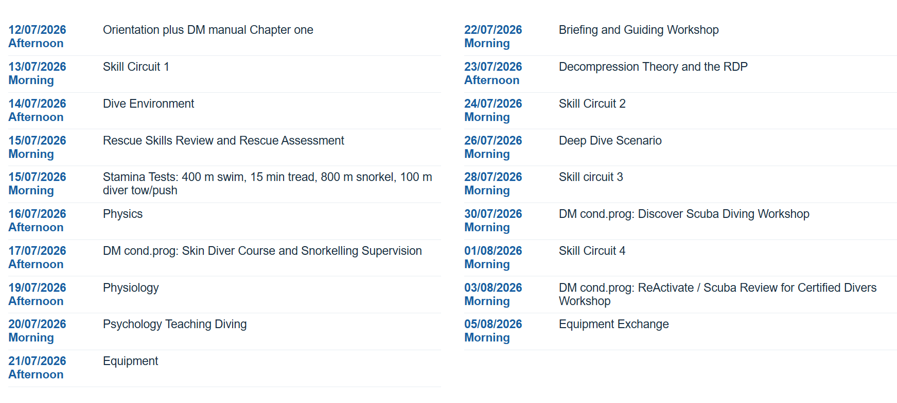

Zoals je weet, probeer ik duidelijk te maken dat een Dive Master Trainee-programma in de tropen bijna alle, zo niet alle, vakjes afvinkt om succesvol met een levenscrisis om te gaan, of op zijn minst met dat hardnekkige gevoel van "is dit alles?". Laat ik daarom eerst beschrijven hoe dit programma daadwerkelijk aanvoelt, wat mensen er echt doen en leren. Droge beschrijvingen vind je op elke website van elke duikschool, maar hier wil ik je een ander perspectief bieden.
De kans is groot dat je al eens hebt gedoken tijdens een vakantie, dus je weet er al iets van. Zo niet, dan leg ik het kort uit: recreatief duiken in warm water heeft niets te maken met beelden van mensen in duikpakken die urenlang onder water blijven in duiksluizen met grappige heliumstemmen, of opgesloten in kooien terwijl ze naar grote haaien kijken. Allemaal onzin. Duiken in warm water is ontspannen zwemmen in een aquarium, terwijl je onder water kunt ademen en op elk gewenst moment naar de oppervlakte kunt gaan. Je hoeft geen goede zwemmer te zijn, je hoeft niet superfit te zijn om te gaan duiken. Als je kunt zwemmen en in een redelijke conditie verkeert, kun je van het duiken genieten. Duiken is vliegen onder water, in een compleet nieuwe wereld. Duiken in warm water is volkomen veilig, absoluut niet eng, en fysiek nauwelijks belastend.
Leren duiken is ook niet moeilijk. Sterker nog, in drie dagen en vier duiken kun je je certificaat halen om helemaal zelfstandig met een buddy te gaan duiken: de Open Water-cursus. Ik weet dat velen van jullie dit waarschijnlijk al gedaan hebben. Velen hebben misschien ook de tweedaagse Advanced-cursus gevolgd, waarin je hebt geleerd wat dieper te gaan, aan je drijfvermogen hebt gewerkt, en misschien effectiever hebt leren navigeren, of 's nachts hebt gedoken. Weinigen zullen de laatste recreatieve duikcursus hebben gedaan, de driedaagse Rescue-cursus, waarin je leert hoe je voor andere duikers kunt zorgen. Deze laatste cursus is meestal de favoriet van zowel cursisten als instructeurs, omdat alles wat je hebt geleerd hier op een betekenisvolle, uitdagende en leuke manier samenkomt. Dus in ongeveer een week kun je op dit niveau zitten, zelfs als je nog nooit hebt gedoken.
Daarna ga je verder als Divemaster Trainee, een DMT. Dit is het programma waarvan ik overtuigd ben dat het de perfecte manier is om met een zingevingscrisis in ons leven om te gaan, omdat het alle vakjes afvinkt die ik hierboven heb beschreven. Ik besef dat je waarschijnlijk niet zo geïnteresseerd bent in het daadwerkelijk werken in de duikwereld (maar je weet maar nooit), maar wat ik wil zeggen is dat dit programma op zichzelf al heel interessant voor je is.
Een Divemaster Trainee-programma leert mensen de kennis, vaardigheden en houding om de verantwoordelijkheid te dragen voor het leiden van duiken met gecertificeerde duikers en het assisteren van instructeurs bij het lesgeven in duiken. Meestal is er één persoon die de mentor is van alle trainees en die verantwoordelijk is voor het hele programma. Alle trainees maken ook deel uit van het team en gaan dagelijks samen duiken, of helpen instructeurs bij het geven van cursussen.
Het verwerven van de vaardigheden die je nodig hebt om Dive Master te worden, kost tijd en oefening. Je duikt met je mentor om vaardigheden te leren, met een instructeur om te assisteren en te leren omgaan met duikers, of met andere studenten voor de ervaring en het plezier. Je zult veel tijd doorbrengen op de boot, onder water, of in contact met mensen van alle leeftijden en alle nationaliteiten.
Een goede duikschool heeft een duidelijk programma om je hierbij te helpen, en iemand die verantwoordelijk is voor dit programma. Meestal is dit een schema van twee of drie weken dat steeds opnieuw wordt doorlopen, of maandelijks, of hoe dan ook. Je wordt geacht deel te nemen aan activiteiten uit dit schema wanneer je daartoe in staat bent, of wanneer je er klaar voor bent, of wanneer je er zin in hebt. Een goede duikschool geeft je hiervoor minstens een maand, maar bij voorkeur twee of zelfs drie maanden. Je hebt deze tijd nodig, want je bent hier niet om zo snel (en zo goedkoop) mogelijk Divemaster te worden. Voor jou is de weg het doel. Bovendien heb je waarschijnlijk ook wat tijd nodig voor online werk of iets dergelijks.

Zodra je je onder water op je gemak voelt en een aantal workshops hebt gedaan, word je ingezet om instructeurs te assisteren bij cursussen, meestal probeerduiken, Open Water of Advanced Open Water. Je wordt zo snel mogelijk een actief lid van het team. Laten we eens kijken naar een typisch schema van twee weken voor een Divemaster Trainee.Je zult dit schema niet letterlijk zo volgen. Als je twee maanden blijft, komt het schema drie keer langs, zodat je kunt kiezen wat je doet. Zo heb je tijd om cursussen te assisteren en ook tijd vrij voor wat je verder nog moet doen. Meestal is een schema ingedeeld in halve dagen, waarbij het ene deel voor het duiken is en het andere deel voor activiteiten op het land. Meestal is de theorie (natuurkunde, fysiologie, uitrusting, decompressietheorie en duikomgeving) optioneel: als je dit liever online en alleen doet, of thuis, dan is dat aan jou.
Een skill circuit is simpelweg een sessie in een zwembad of ondiep water waarin je leert hoe je alle vaardigheden die tijdens een Open Water cursus worden onderwezen, moet demonstreren en beoordelen; het legen van een masker, het gebruik van een alternatieve luchtbron, het terugvinden van je regelaar, enzovoort.
Een typische dag van een Divemaster-trainee in de tropen.
Je wordt 's ochtends wakker en neemt waarschijnlijk een douche, springt op je fiets of loopt naar de duikwinkel of naar een koffiezaakje vlakbij. Je zit midden in het assisteren bij een Open Water cursus met je favoriete instructeur, Robin, die al een paar jaar bij de duikwinkel werkt en met wie je al eerder hebt samengewerkt. Jullie treffen elkaar bij de boot, de grote houten boot die plaats biedt aan 40 studenten, die aan de pier ligt te wachten. Het is zonnig en er staat wat wind, maar geen hoge golven. Robin vertelt je wat jullie samen gaan doen: je hebt dezelfde vier studenten als gisteren, één uit Duitsland, één uit Frankrijk en één uit Canada. Ze spreken allemaal een beetje Engels, en Robin spreekt een beetje Frans, terwijl jij een beetje Duits spreekt, dus dat is een van de redenen waarom je erbij bent. Je kent ze al, want je hebt gisteren met ze gedoken tijdens duik 1 en duik 2 van hun Open Water cursus, dus je weet wat je kunt verwachten. Je helpt hen hun uitrusting klaarzetten en doet de buddy checks. Je luistert naar de briefing die Robin geeft, en daarna help je hen het water in te gaan, waarbij Robin als eerste gaat. Omdat een van de Duitsers nog een beetje nerveus is, besluit je de buddy van die student te worden.
Je gaat een paar vaardigheden onder water herhalen: hoe je een regelaar terugvindt en hoe je je masker leegt. Jij bent verantwoordelijk voor het bij elkaar houden van de studenten, en jij demonstreert deze vaardigheden ter herinnering. Je hebt al drie skill circuits gedaan en hebt deze specifieke vaardigheden gisteren nog opgezocht, dus je voelt je zelfverzekerd genoeg om dit te doen. Daarna gaan jullie allemaal op duik. Robin gaat voorop, en jij blijft met je student achteraan. Jij bent er als eerste bij om hen te helpen met kleine problemen, zoals drijfvermogen, en jij zorgt dat de groep bij elkaar blijft.
Er zijn nog een paar andere Divemaster Trainees op de boot, en jullie drinken samen een kop koffie. Divemaster Trainees komen uit alle lagen van de bevolking, uit veel verschillende landen; meestal zijn ze hier voor een pauze van hun oude leven, om wat afstand en perspectief te krijgen, en om daadwerkelijk genoeg tijd te hebben om dat te doen. (Het is verbazingwekkend hoe makkelijk het is om met deze mensen in contact te komen en van ze te leren: ik heb urenlang geluisterd naar softwareontwikkelaars, bouwvakkers, verkeerspiloten, ex-gedetineerden, sterrenchefs, oud-militairen, noem maar op, vroeg of laat komen ze allemaal langs. En jullie verbinden je met elkaar, omdat jullie allemaal weten waarom jullie er zijn.)
Wanneer alle studenten zijn aangekomen, begeleid je die van jou naar hun uitrusting. Meestal duurt het even voordat je bij de eerste duiklocatie bent, en studenten stellen hun vragen graag eerst aan mensen zoals jij in plaats van aan hun drukke instructeur, dus je leert ze kennen en je kunt hen helpen zich klaar te maken en te ontspannen. Ze vragen meestal naar dingen die hen stress bezorgen: vissen, hun uitrusting, en ze vragen je altijd waar je vandaan komt en hoe lang je hier al bent en wat je aan het doen bent. Ook hier is het weer heel makkelijk om contact te maken en echte gesprekken met ze te voeren. Het is verbazingwekkend hoeveel ze je vertellen, hoe open en persoonlijk het kan worden. Dat komt misschien doordat je ze meeneemt naar een nieuwe en mogelijk stressvolle omgeving, waardoor ze in een heel open en goede stemming zijn, en omdat je hebt bewezen dat ze je kunnen vertrouwen. En het helpt waarschijnlijk ook dat ze weten dat ze binnenkort weggaan en je waarschijnlijk nooit meer zullen zien. Ik ken werkelijk geen andere situatie, geen andere omgeving waarin dit zo simpel en makkelijk gaat.
Tijdens de duik, onder water, moet je ontspannen en je ademhaling perfect onder controle houden. Je leert dit echt heel snel, want met je adem regel je je drijfvermogen en je eigen ontspanning. De hele tijd onder water ben je je perfect bewust van je ademhalingspatroon. Je helpt ook je studenten om te ontspannen, wijst interessante dingen aan, en jij bent de eerste die helpt bij het oplossen van kleine problemen, terwijl de instructeur de uiteindelijke verantwoordelijkheid draagt, zoals een kapitein met jou als copiloot.
Na de duiken, terug aan land, zul je vaak iets drinken of samen eten met je studenten of je medecursisten Divemaster. Je zult het niet te laat maken, want morgen staat er een workshop op het programma: search and recovery onder water op zee.
Alles wat je doet wordt beoordeeld aan de hand van duidelijke criteria en afgetekend door je mentor of een duikinstructeur, dus je krijgt heldere feedback. Wanneer je alles hebt gedaan wat nodig is, en waarschijnlijk meer, word je gecertificeerd als Divemaster door de internationale duikorganisatie van je duikwinkel, meestal PADI of SSI. Vanaf dat moment ben je een wereldwijd erkende duikprofessional.